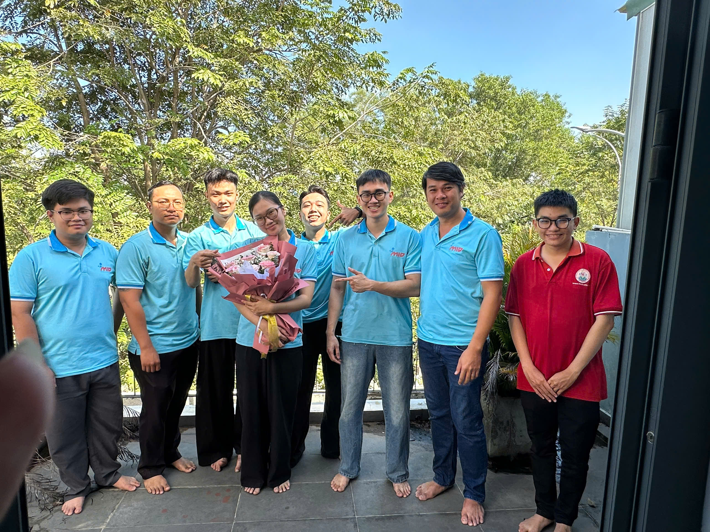
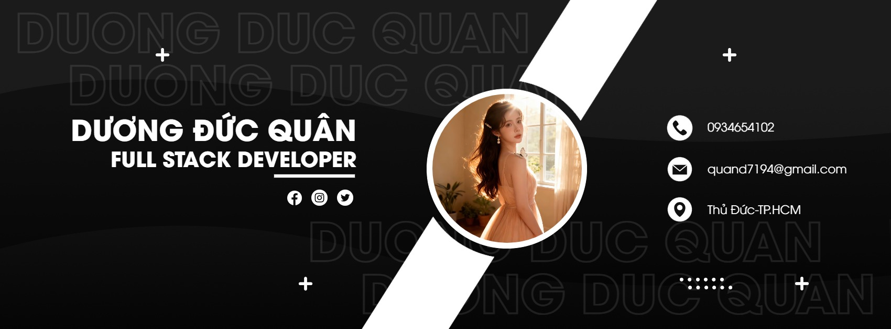
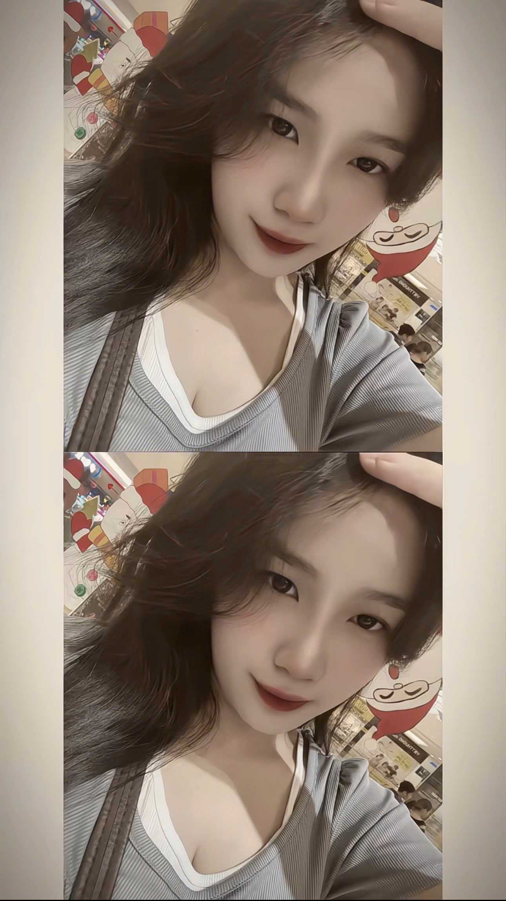
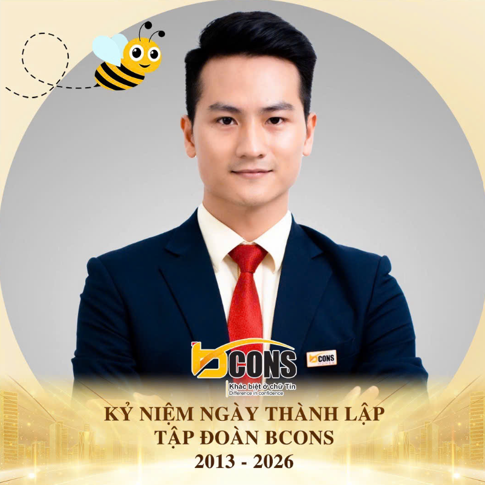
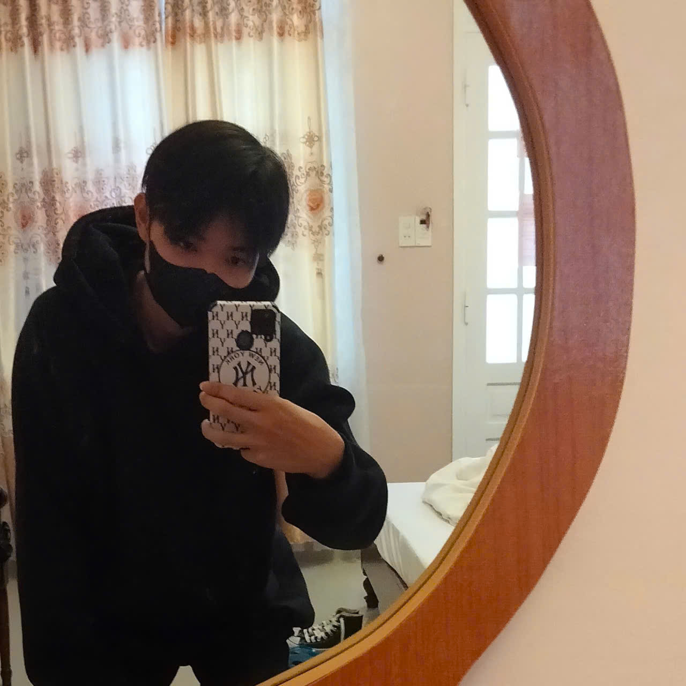
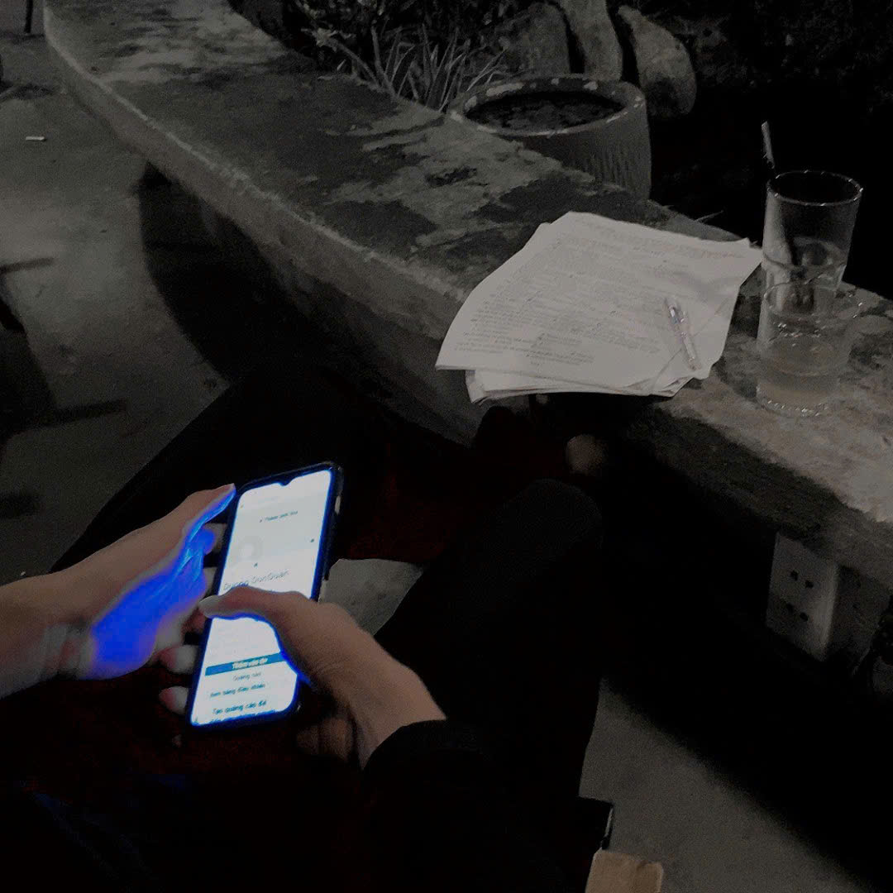
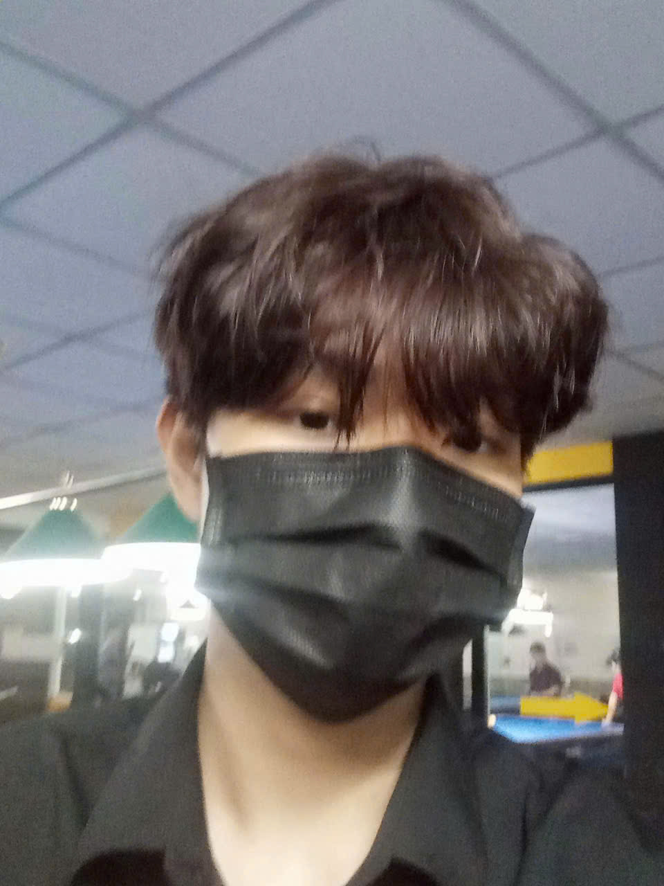

Giới thiệu về tôi – Dương Đức Quân
Xin chào, mình là Dương Đức Quân, trên mạng dùng tên duongducquan và DuongDucQuan.
- 💻 Sinh viên và lập trình viên Full Stack Web: tự dựng giao diện, viết API, thiết kế database rồi đưa website lên hosting.
- 🌐 Làm việc với React, Node.js, PHP, MySQL, dùng Socket.IO cho chức năng realtime.
- 🗺️ Đang nghiên cứu GIS (OpenStreetMap, Nominatim, Overpass API) trong quá trình thực tập.
- 🔍 Học và áp dụng SEO On-page cho các website cá nhân.
- 🤖 Dùng AI (Claude Code, Gemini, Groq API) để học nhanh và rà lỗi; kiến trúc và logic thì tự quyết định.
- 🏢 Làm việc cùng MidSortWare / MID Việt Nam.
Kỹ năng công nghệ của DuongDucQuan
🎨 Frontend
⚙️ Backend
🗄️ Database
🔌 API
⚡ Realtime
🤖 AI
🗺️ GIS
🚀 DevOps
🔍 SEO
Dự án đã nghiên cứu và thực hành
| Dự án | Công nghệ chính |
|---|---|
| Website thương mại điện tử | React, Node.js, MySQL |
| AI Chatbot | Groq API, Socket.IO |
| Hệ thống đồng bộ điện thoại – máy tính | Node.js, Express, Socket.IO |
| Hệ thống API nông sản | PHP, CodeIgniter 4, Swagger |
| Hệ thống bản đồ tìm kiếm địa điểm | OSM, Nominatim, Overpass |
| Website hồ sơ cá nhân | HTML, CSS, JavaScript, SEO |
| Hệ thống xác thực và thanh toán | JWT, VNPay, MoMo, ZaloPay, PayPal |
Bộ sưu tập ảnh của Dương Đức Quân
Kho lưu trữ hình ảnh chân thực, rõ nét của Dương Đức Quân (DuongDucQuan, duongducquan) – lập trình viên Full Stack Web Developer tại Thủ Đức, TP. Hồ Chí Minh. Dưới mỗi bức ảnh là phần giới thiệu chuẩn SEO về hoạt động công nghệ, kỹ năng lập trình và dấu ấn cá nhân. Bấm vào từng ảnh để phóng to chi tiết.
Chân dung Dương Đức Quân
Dương Đức Quân (DuongDucQuan) – Chân dung lập trình viên Full Stack Web Developer chuyên phát triển ứng dụng web, hệ thống realtime và tối ưu SEO tại TP.HCM.
#DuongDucQuan · Chân dung
⤢ Phóng toKhoảnh khắc selfie trẻ trung
Ảnh selfie đời thường của Dương Đức Quân, sinh viên Công nghệ Thông tin tại Thủ Đức với phong cách trẻ trung, năng động và luôn đam mê khám phá công nghệ mới.
#duongducquan · Selfie
⤢ Phóng toHồ sơ Full Stack Developer
Tổng hợp năng lực lập trình của Dương Đức Quân: xây dựng frontend với ReactJS, backend với Node.js/PHP, cơ sở dữ liệu MySQL và tích hợp trí tuệ nhân tạo AI.
#DươngĐứcQuân · Full StackLập trình viên Dương Đức Quân
Hình ảnh Dương Đức Quân (duongducquan) gắn liền với đam mê viết mã nguồn sạch, phát triển các giải pháp website thương mại điện tử và dịch vụ công nghệ số.
#DuongDucQuan · DeveloperNghiên cứu dự án công nghệ
Dương Đức Quân nghiên cứu kiến trúc MVC, thiết kế cơ sở dữ liệu quan hệ và xây dựng giao diện người dùng hiện đại, tương thích hoàn hảo trên thiết bị di động.
#duongducquan · Lập trìnhWeb Developer TP.HCM
Khoảnh khắc gắn bó với môi trường công nghệ tại TP.HCM của lập trình viên Dương Đức Quân, định hướng trở thành kỹ sư phần mềm Full Stack giàu kinh nghiệm.
#DuongDucQuan · TP.HCM
⤢ Phóng toHọc hỏi công nghệ mới
Dương Đức Quân (duongducquan) luôn chủ động đón đầu các công nghệ mới như AI Chatbot streaming, bản đồ GIS OpenStreetMap và quy trình triển khai CI/CD.
#DươngĐứcQuân · Học hỏiSinh viên IT Thủ Đức
Hành trình học tập và rèn luyện kiến thức nền tảng của Dương Đức Quân tại khu đô thị Đại học Thủ Đức, xây dựng nền tảng vững chắc cho sự nghiệp công nghệ thông tin.
#duongducquan · Sinh viên ITChuyên môn React & Node.js
Hình ảnh đại diện cho kỹ năng lập trình web hiện đại của Dương Đức Quân, sử dụng React kết hợp backend Express.js để tạo ra các sản phẩm web mượt mà.
#DuongDucQuan · ReactJSProgrammer sáng tạo
Dương Đức Quân (duongducquan) theo đuổi phong cách lập trình tư duy phản biện, tối ưu hóa cấu trúc cơ sở dữ liệu và viết mã nguồn dễ đọc, dễ bảo trì.
#duongducquan · ProgrammerCoder trẻ nhiệt huyết
Hình ảnh thể hiện tinh thần nhiệt huyết của Dương Đức Quân, không ngừng tìm tòi giải quyết các bài toán kỹ thuật từ RESTful API đến hệ thống đồng bộ realtime.
#DuongDucQuan · CoderGiải pháp Realtime & WebSocket
Dương Đức Quân có kinh nghiệm thực tế triển khai ứng dụng thời gian thực bằng Socket.IO: phòng chat, thông báo tức thì và hệ thống đồng bộ giữa điện thoại với máy tính.
#DươngĐứcQuân · RealtimeLập trình viên trẻ Việt Nam
Bức ảnh chân thực ghi lại hình ảnh Dương Đức Quân (duongducquan) – lập trình viên trẻ kiên trì rèn luyện, hướng đến những sản phẩm công nghệ hữu ích cho cộng đồng.
#duongducquan · Việt Nam
⤢ Phóng toKỷ niệm học tập & làm việc
Khoảnh khắc kỷ niệm quý giá trong hành trình học tập ngành Công nghệ Thông tin của Dương Đức Quân, ghi dấu nỗ lực từng ngày để hoàn thiện kỹ năng Full Stack.
#DuongDucQuan · Kỷ niệmAvatar chính thức DuongDucQuan
Ảnh đại diện nhận diện chính thức của Dương Đức Quân (duongducquan) trên GitHub, Facebook, LinkedIn, TikTok và trang web cá nhân.
#duongducquan · Avatar
⤢ Phóng toTrải nghiệm dã ngoại
Bên cạnh giờ lập trình, Dương Đức Quân yêu thích dã ngoại, hòa mình vào thiên nhiên để tái tạo năng lượng và mở rộng thế giới quan sáng tạo.
#DuongDucQuan · Ngoại cảnh
⤢ Phóng toLập trình viên năng động
Chân dung hiện đại của Dương Đức Quân (duongducquan) – người trẻ làm chủ công nghệ, làm việc chăm chỉ và luôn tìm giải pháp tối ưu cho từng dự án phần mềm.
#duongducquan · Năng độngChân dung sắc nét
Hình ảnh chân dung góc nhìn cận cảnh của Dương Đức Quân (DuongDucQuan), toát lên sự tự tin, chân thành và tinh thần trách nhiệm trong công việc.
#DuongDucQuan · Chân dungNghiên cứu hệ thống phần mềm
Dương Đức Quân tìm hiểu sâu các mô hình kiến trúc phần mềm, tối ưu hiệu năng API và ứng dụng trí tuệ nhân tạo để nâng cao trải nghiệm ứng dụng web.
#DươngĐứcQuân · Hệ thống
⤢ Phóng toSinh viên công nghệ TP.HCM
Hình ảnh kỷ niệm thời sinh viên của Dương Đức Quân (duongducquan), thể hiện tinh thần vượt khó, học tập liên tục và quyết tâm trở thành lập trình viên xuất sắc.
#duongducquan · Sinh viênGặp gỡ bạn bè & đồng nghiệp
Dương Đức Quân trong buổi giao lưu cùng bạn bè IT, chia sẻ định hướng nghề nghiệp, trao đổi kinh nghiệm học tập và lan tỏa tinh thần hợp tác nhóm tích cực.
#DuongDucQuan · Bạn bèHoạt động tập thể sinh viên
Khoảnh khắc đáng nhớ trong hoạt động tập thể của Dương Đức Quân (duongducquan), lưu giữ những kỷ niệm đẹp và tinh thần gắn kết với tập thể lớp công nghệ thông tin.
#duongducquan · Tập thểSự kiện giao lưu công nghệ
Dương Đức Quân tích cực tham gia các buổi trao đổi kỹ thuật, cập nhật xu hướng phát triển web hiện đại và mở rộng kết nối trong cộng đồng developer TP.HCM.
#DuongDucQuan · Sự kiệnĐời thường mộc mạc
Bức ảnh mộc mạc, gần gũi của Dương Đức Quân (duongducquan), thể hiện tính cách hòa đồng, thân thiện và chân thành của chàng trai IT quê hương Việt Nam.
#duongducquan · Đời thườngĐam mê công nghệ kết nối
Dương Đức Quân luôn coi trọng tinh thần đồng đội, cùng các bạn sinh viên chia sẻ tài liệu học lập trình, rà soát code và hỗ trợ nhau hoàn thành đồ án tốt nghiệp.
#DuongDucQuan · Đồng độiHọc hỏi không ngừng
Hình ảnh thể hiện ý chí phấn đấu của Dương Đức Quân (duongducquan), luôn dành thời gian tự học tài liệu chuyên sâu, thực hành code hàng ngày để nâng cao kỹ năng.
#duongducquan · Tự họcChặng đường phát triển
Từng bước trưởng thành của Dương Đức Quân trên con đường lập trình Full Stack Web, từ những dòng code HTML đầu tiên đến những hệ thống API hoàn chỉnh.
#DuongDucQuan · Trưởng thànhNụ cười rạng rỡ
Khoảnh khắc vui vẻ, rạng rỡ của Dương Đức Quân (duongducquan) mang lại nguồn năng lượng tích cực cho bạn bè, đồng nghiệp và những người xung quanh.
#duongducquan · Năng lượngTinh thần gắn kết tập thể
Dương Đức Quân luôn là thành viên nhiệt tình trong các hoạt động ngoại khóa, xây dựng mối quan hệ bền chặt với anh em, bạn bè trong suốt những năm đại học.
#DuongDucQuan · Gắn kếtThanh xuân tươi đẹp
Bức ảnh kỷ niệm những ngày tháng thanh xuân sôi nổi của Dương Đức Quân (duongducquan), nơi tình bạn và đam mê công nghệ cùng nhau lớn lên.
#duongducquan · Thanh xuânKhoảnh khắc ấm áp
Ghi dấu thêm một kỷ niệm ấm áp của Dương Đức Quân (DuongDucQuan), khép lại bộ sưu tập ảnh với nhiều hy vọng và mục tiêu nghề nghiệp phía trước.
#DuongDucQuan · Kỷ niệm đẹpCâu hỏi thường gặp
Dương Đức Quân là ai?
Dương Đức Quân (duongducquan, DuongDucQuan) là sinh viên và lập trình viên Full Stack Web Developer tại Thủ Đức, TP.HCM.
DuongDucQuan biết những công nghệ nào?
HTML5, CSS3, JavaScript, TypeScript, ReactJS, Node.js, Express, PHP, CodeIgniter 4, MySQL, MongoDB, Socket.IO, OpenStreetMap, Docker và SEO On-page.
Kết nối với Dương Đức Quân?
Qua Facebook DuongDucQuann, GitHub duongducquan, TikTok @duongducquan285 và LinkedIn duongducquan.